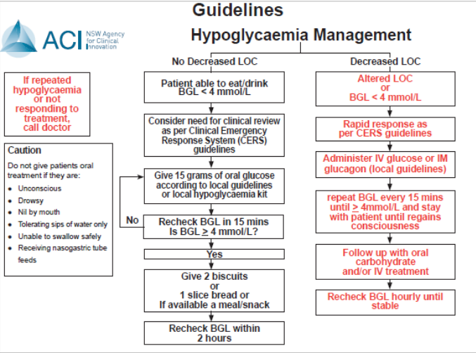
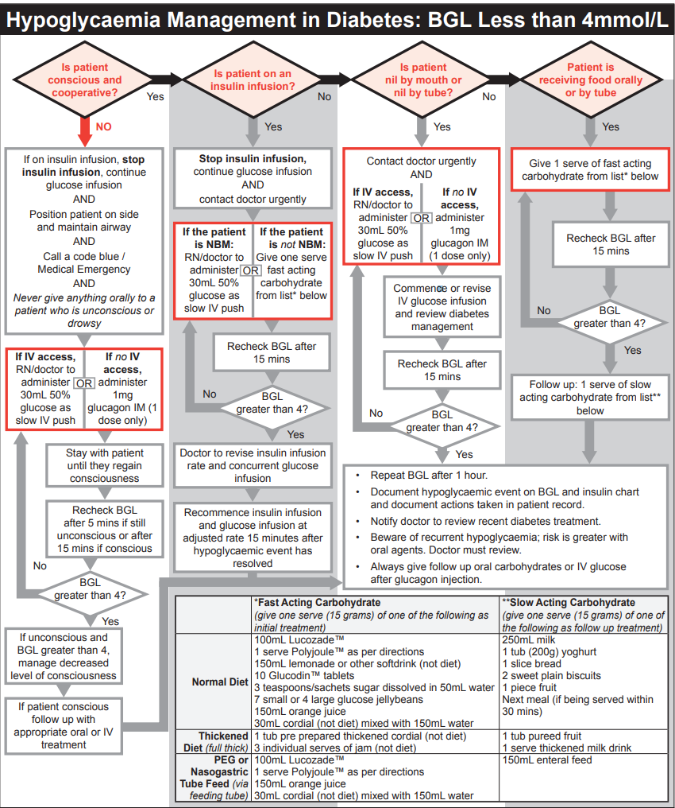

Hypoglycaemia
General approach
- If they are NOT CONFUSED and CAN HAVE ORAL INTAKE -> give them oral glucose replacement
- sugar lollies, paste, jellybeans, fruit juice
- Sandwich/fruit for lower GI intake
- They CANNOT tolerate oral intake -> IV 50% Glucose (20mL)
- No IV access -> IM glucagon (would not work in liver failure due to requirement of liver glycogen stores)
Hypoglycaemia management algorithm

Insulin in the context of hypoglycaemia
When the patient is hypoglycaemic when the next dose of insulin should be given: 1. Correct the hypoglycaemia first 2. Delay insulin dose - DO NOT OMIT INSULIN 3. Consider reviewing insulin dosage
Hypoglycaemia management in Diabetes
 Following hypoglycaemic management in Diabetic: 1. Assess patient – provide basic and advanced life support if required. 2. Review diabetes management for causes of hypoglycaemia and correct avoidable causes: - If the cause is identified and corrected (e.g. missed, delayed or reduced intake), insulin dose adjustment is not required unless hypoglycaemia recurs - If the cause is not identified or cannot be corrected and - hypoglycaemia has occured WITHIN 4 hours after mealtime insulin, reduce the dose of THAT mealtime insulin by 20% the following day - If hypoglycaemia has occured OUTSIDE 4 hours after mealtime insulin reduce basal insulin dose by 20% 3. If on insulin and eating normally, do not withhold subsequent mealtime or basal insulin after treating hypoglycaemia: - If reduced oral intake consider reducing mealtime insulin dose(s). 4. If on a sulphonylurea, obtain specialist advice on management as hypoglycaemia can be recurrent or prolonged: - Monitor BGL hourly for 4 hours, then 4 hourly for 24 hours after last hypoglycaemic episode. - If recurrent hypoglycaemia, commence IV glucose titrating rate to BGL greater than 4 mmol/L. - Withhold oral hypoglycaemic treatment until recovered and review whether further therapy is required.